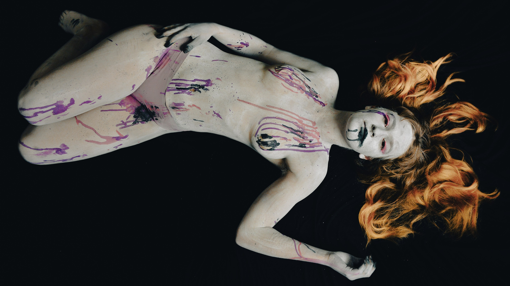

La curiosità,
messa a fuoco.
Imparare una tecnica. Provare un’idea.
Scoprire un altro modo di guardare.
Ogni corso a cui ho partecipato è un’occasione per mettermi alla prova: imparare tecniche, scoprire nuovi modi di usare la luce e affinare il mio sguardo. Qui raccolgo gli scatti di questo percorso, che continua.
Esplora i corsisempre.

Indice dei corsi
Il mio percorso fotografico
Ogni esperienza aggiunge qualcosa al mio sguardo.
Un tentativo alla volta.
Dettagli
La luce rivela ogni forma.
Gesti, linee e segni sulla pelle diventano una ricerca di forme. Avvicinare lo sguardo e osservare il passaggio tra luce e ombra per dare forza alla composizione.
- Luce e ombra
- Forme e gesti
- Composizione
Metamorfosi
Oltre la prima impressione.
Un volto, un gesto, un riflesso: cambiare prospettiva per cercare un’immagine diversa. Una ricerca visiva tra identità, dettagli e trasformazione.
- Racconto visivo
- Riflessi
- Ricerca espressiva
Ritratto e atmosfera
La luce incontra l’emozione.
Uno sguardo, un gesto, un dettaglio: cercare l’espressività attraverso la luce e la composizione. Una serie di ritratti per esplorare pose, inquadrature e atmosfere, tra delicatezza e intensità.
- Luce e ombra
- Posa ed espressione
- Dettagli
Body painting
Il corpo diventa tela.
Colore, gesto e luce si incontrano nel ritratto creativo. Una serie di prove per osservare le forme, fermare il movimento e dare spazio ai dettagli che rendono ogni immagine diversa.
- Ritratto creativo
- Luce e movimento
- Colore e dettagli
Ritratti
La presenza, prima della posa.
Nel ritratto cerco l’incontro tra una persona e la luce. Espressioni, ombre e piccoli gesti diventano il punto di partenza per continuare a osservare.
- Luce sul volto
- Espressione
- Inquadratura
Ballo
Il linguaggio dei gesti.
Osservare il movimento, cogliere una pausa, dare spazio all’atmosfera. Nel ballo anche un dettaglio può raccontare un incontro.
- Movimento
- Tempi di scatto
- Luce ambiente
Cibo
La luce ha un altro sapore.
La fotografia del cibo invita a costruire con attenzione: scegliere un punto di vista, cercare un equilibrio e lasciare che luce, forme e colori raccontino la scena.
- Composizione
- Colore
- Punto di vista
Light painting
Disegnare nel buio.
Quando la luce diventa un segno, fotografare significa anche sperimentare con il tempo. Un piccolo laboratorio di immaginazione, esposizione e movimento.
- Lunghe esposizioni
- Tracce luminose
- Sperimentazione
Polveri
L’energia di un istante.
Il colore prende forma, il movimento lascia una traccia. Un’occasione per allenare l’attenzione al momento dello scatto e osservare come la luce incontra le particelle.
- Tempismo
- Movimento
- Colore e luce
Tim Burton
Tra sogno e meraviglia inquieta.
Un corso fotografico a tema Tim Burton, regista e produttore cinematografico statunitense. Trucco, gesti e ambientazioni diventano strumenti per costruire personaggi e atmosfere, sperimentando con il ritratto, il colore e il racconto per immagini.
- Ritratto creativo
- Atmosfera e colore
- Racconto per immagini
Bosco
Imparare a guardare, tra gli alberi.
Il bosco offre un laboratorio a cielo aperto: luce filtrata, texture, riflessi e movimento. Un percorso per sperimentare con l’inquadratura e trovare nuove possibilità anche nei soggetti più familiari.
- Luce naturale
- Riflessi
- Movimento creativo
Ritratto ambientato
Una presenza cambia lo spazio.
Mettere in relazione una persona e l’ambiente che la circonda: porte, stanze e luce naturale diventano parte del ritratto. Un esercizio di composizione per dare spazio alla figura e all’atmosfera.
- Luce naturale
- Figura e ambiente
- Composizione
Racconti in bianco e nero
Lasciare parlare luce e ombra.
Un movimento, un riflesso, una figura nel controluce. Il bianco e nero invita a osservare contrasti e forme, cercando il momento in cui una scena diventa racconto.
- Bianco e nero
- Controluce
- Racconto visivo
Architettura e prospettive
Seguire le linee. Scoprire lo spazio.
Riflessi, scale e passaggi diventano occasioni per allenare lo sguardo. Il bianco e nero mette in risalto geometrie e contrasti, mentre la prospettiva guida l’occhio e dà profondità all’immagine.
- Prospettiva
- Bianco e nero
- Riflessi e geometrie
La tecnica si impara.
Lo sguardo si coltiva.
Porto con me ogni prova, ogni scoperta e ogni nuovo modo di usare la luce.
Per tornare a fotografare con un po’ più di consapevolezza e la stessa curiosità.